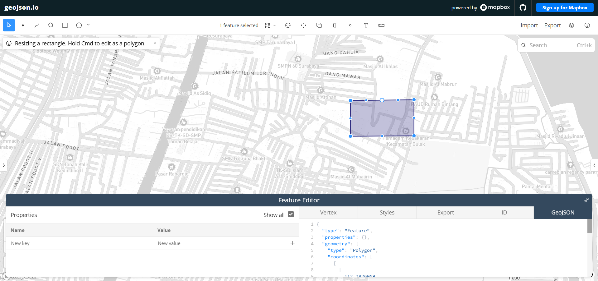
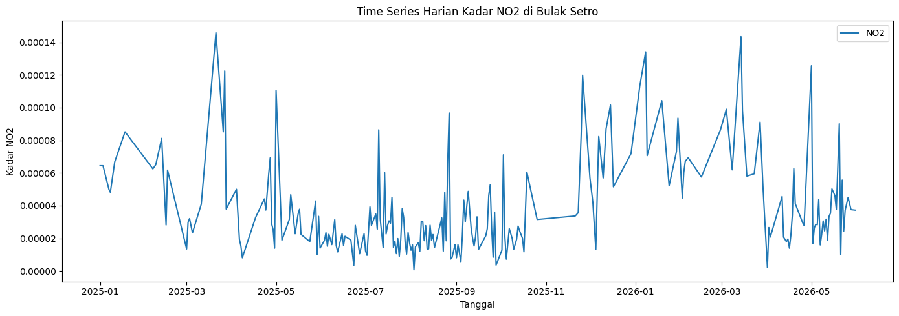
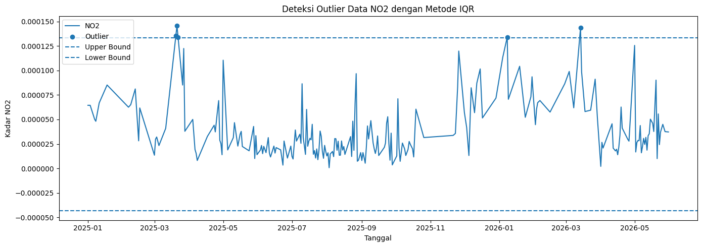
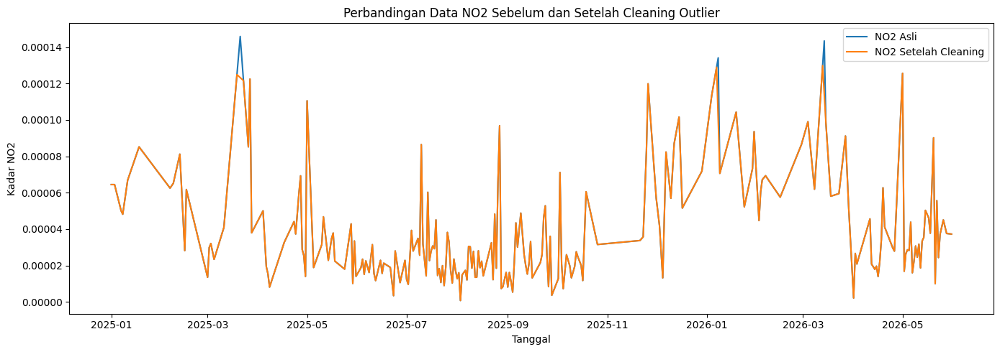
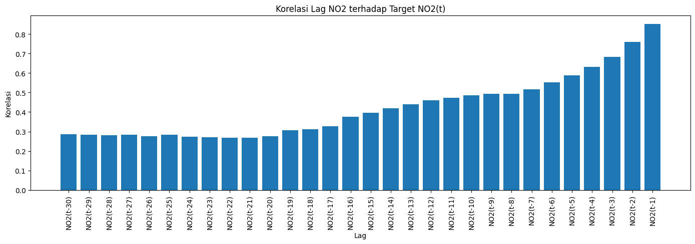
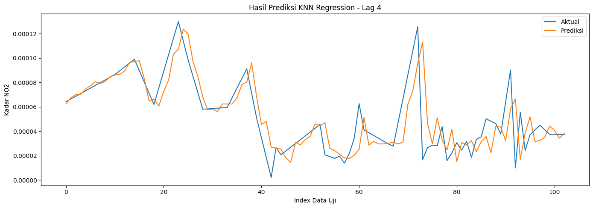
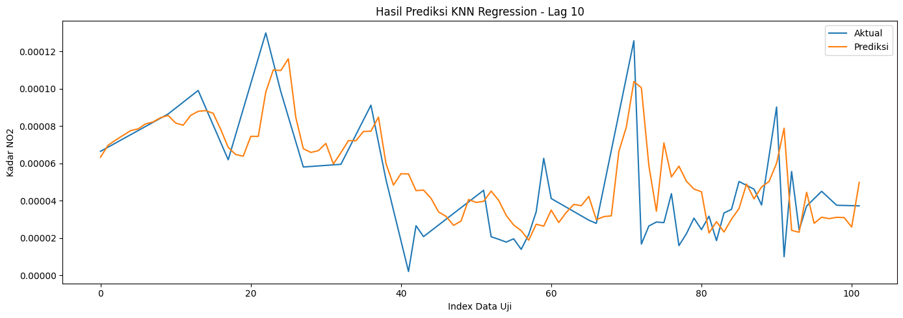
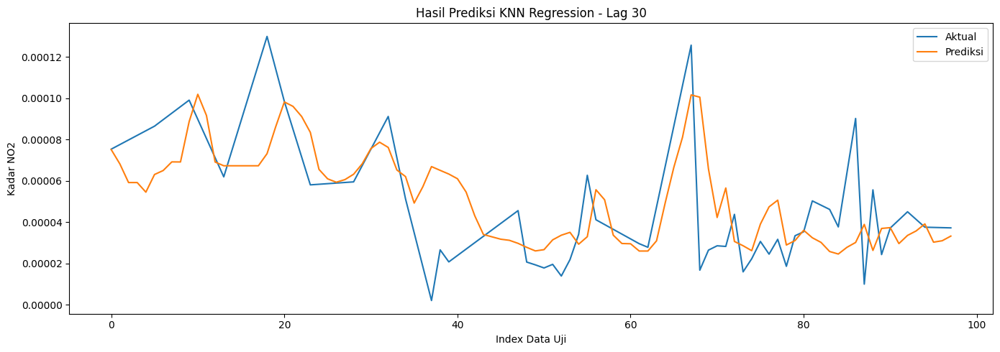
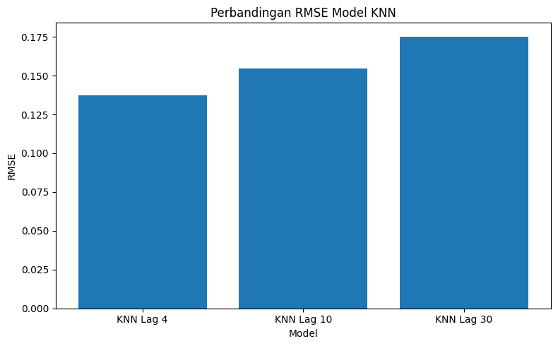

Prediksi Kadar NO₂ Bulak Setro Menggunakan K-Nearest Neighbor (KNN)#
Notebook ini sudah dirapikan dan diselesaikan agar alurnya utuh seperti halaman Jupyter Book: mulai dari pengumpulan data, pembacaan file NetCDF, preprocessing, deteksi outlier, normalisasi, pembentukan data supervised, pelatihan model KNN, evaluasi, sampai visualisasi hasil prediksi.
Data yang digunakan:
NO2bulaksetro.ncatauopenEO.ncsebagai data NetCDF hasil pengambilan dari Copernicus/openEO.NO2_bulaksetro_timeseries.csvakan dibuat ulang otomatis dari file NetCDF.
1. Latar Belakang#
Nitrogen Dioksida (NO₂) merupakan salah satu polutan udara yang banyak dihasilkan dari aktivitas pembakaran bahan bakar fosil, seperti kendaraan bermotor, industri, dan pembangkit listrik. Konsentrasi NO₂ yang tinggi dapat berdampak pada kesehatan manusia, terutama sistem pernapasan, serta dapat menurunkan kualitas lingkungan.
Analisis deret waktu kadar NO₂ dapat digunakan untuk melihat pola perubahan pencemaran udara dari waktu ke waktu. Pada notebook ini, data NO₂ wilayah Bulak Setro dianalisis dan diprediksi menggunakan metode K-Nearest Neighbor Regression (KNN Regression).
2. Import Library#
Library yang digunakan terdiri dari:
h5pyuntuk membaca file NetCDF/HDF5.pandasdannumpyuntuk pengolahan data.matplotlibuntuk visualisasi.sklearnuntuk preprocessing, pembagian data, model KNN, dan evaluasi.
pip install h5py
Requirement already satisfied: h5py in /usr/local/python/3.12.1/lib/python3.12/site-packages (3.16.0)
Requirement already satisfied: numpy>=1.21.2 in /usr/local/python/3.12.1/lib/python3.12/site-packages (from h5py) (2.4.2)
Note: you may need to restart the kernel to use updated packages.
import os
from pathlib import Path
from datetime import datetime, timedelta
import h5py
import numpy as np
import pandas as pd
import matplotlib.pyplot as plt
from sklearn.preprocessing import MinMaxScaler
from sklearn.neighbors import KNeighborsRegressor
from sklearn.metrics import mean_squared_error, mean_absolute_error, r2_score
pd.set_option('display.max_columns', None)
pd.set_option('display.width', 120)
3. Pengumpulan Data#
Data NO₂ dapat diambil dari Copernicus Data Space Ecosystem menggunakan openEO. Contoh kode pengambilan data ditulis di bawah ini sebagai dokumentasi.
Catatan: bagian koneksi openEO tidak dijalankan di notebook ini supaya notebook tetap bisa dibuka dan dijalankan tanpa login. Analisis berikutnya memakai file NetCDF yang sudah tersedia, yaitu
NO2bulaksetro.ncatauopenEO.nc.
import openeo
connection = openeo.connect("openeo.dataspace.copernicus.eu").authenticate_oidc()
aoi = {
"type": "FeatureCollection",
"features": [
{
"type": "Feature",
"properties": {},
"geometry": {
"type": "Polygon",
"coordinates": [[
[112.780, -7.228],
[112.785, -7.228],
[112.785, -7.232],
[112.780, -7.232],
[112.780, -7.228]
]]
}
}
]
}
s5post = connection.load_collection(
"SENTINEL_5P_L2",
temporal_extent=["2025-01-01", "2026-06-01"],
spatial_extent={
"west": 112.780,
"south": -7.232,
"east": 112.785,
"north": -7.228
},
bands=["NO2"],
)
s5p_no2_daily = s5post.aggregate_temporal_period(reducer="mean", period="day")
s5p_no2_aoi = s5p_no2_daily.aggregate_spatial(reducer="mean", geometries=aoi)
job = s5p_no2_daily.execute_batch(title="NO2 Bulak Setro", outputfile="NO2bulaksetro.nc")
Cell In[3], line 24
s5post = connection.load_collection(
^
IndentationError: unexpected indent

4. Membaca File NetCDF#
File .nc dibaca menggunakan h5py. Variabel utama yang digunakan adalah:
tsebagai waktu.NO2sebagai nilai kadar NO₂.
Nilai waktu pada file NetCDF memakai satuan days since 1990-01-01, sehingga perlu dikonversi menjadi tanggal kalender.
# Pilih file NetCDF yang tersedia di folder kerja
candidate_files = ["NO2bulaksetro.nc", "openEO.nc"]
file_path = None
for filename in candidate_files:
if Path(filename).exists():
file_path = filename
break
if file_path is None:
raise FileNotFoundError("File NetCDF tidak ditemukan. Letakkan NO2bulaksetro.nc atau openEO.nc di folder yang sama dengan notebook.")
print("File yang digunakan:", file_path)
with h5py.File(file_path, "r") as ds:
print("Variabel dalam file:", list(ds.keys()))
no2_raw = ds["NO2"][:].astype(float)
time_raw = ds["t"][:]
time_units = ds["t"].attrs.get("units", b"days since 1990-01-01")
print("Shape data NO2:", no2_raw.shape)
print("Contoh nilai waktu:", time_raw[:5])
print("Satuan waktu:", time_units)
File yang digunakan: NO2bulaksetro.nc
Variabel dalam file: ['t', 'x', 'y', 'crs', 'NO2']
Shape data NO2: (514, 1, 1)
Contoh nilai waktu: [12784 12785 12786 12787 12788]
Satuan waktu: b'days since 1990-01-01'
def decode_h5_attr(value):
"""Mengubah atribut HDF5 bytes menjadi string biasa."""
if isinstance(value, bytes):
return value.decode("utf-8")
if hasattr(value, "decode"):
return value.decode("utf-8")
return str(value)
units_text = decode_h5_attr(time_units)
base_date_text = units_text.split("since")[-1].strip()
base_date = pd.to_datetime(base_date_text)
dates = base_date + pd.to_timedelta(time_raw, unit="D")
# Jika data NO2 masih berbentuk 3 dimensi (time, y, x), rata-ratakan area spasialnya.
# Nilai 0 dianggap sebagai fill value pada file ini, sehingga diganti NaN terlebih dahulu.
no2_raw = np.where(no2_raw == 0, np.nan, no2_raw)
no2_series = np.nanmean(no2_raw, axis=(1, 2))
df = pd.DataFrame({
"date": pd.to_datetime(dates),
"NO2": no2_series
})
df = df.sort_values("date").reset_index(drop=True)
print(df.head())
print(df.tail())
print("Jumlah data awal:", len(df))
print("Jumlah missing NO2 awal:", df["NO2"].isna().sum())
date NO2
0 2025-01-01 NaN
1 2025-01-02 NaN
2 2025-01-03 0.000064
3 2025-01-04 NaN
4 2025-01-05 NaN
date NO2
509 2026-05-27 NaN
510 2026-05-28 0.000038
511 2026-05-29 NaN
512 2026-05-30 NaN
513 2026-05-31 0.000037
Jumlah data awal: 514
Jumlah missing NO2 awal: 291
/tmp/ipykernel_2972/3817811547.py:18: RuntimeWarning: Mean of empty slice
no2_series = np.nanmean(no2_raw, axis=(1, 2))
5. Membuat Data Time Series Harian#
Agar analisis deret waktu rapi, tanggal dibuat lengkap dari tanggal awal sampai tanggal akhir. Jika ada tanggal yang tidak tersedia, nilai NO₂ diisi menggunakan interpolasi linear berdasarkan waktu.
# Membuat rentang tanggal lengkap berdasarkan tanggal minimum dan maksimum dari data
full_range = pd.date_range(start=df["date"].min(), end=df["date"].max(), freq="D")
df_ts = df.set_index("date").reindex(full_range)
df_ts.index.name = "date"
missing_before = df_ts["NO2"].isna().sum()
# Interpolasi nilai kosong berdasarkan waktu
# bfill dan ffill digunakan untuk mengisi jika NaN berada di awal/akhir data.
df_ts["NO2"] = df_ts["NO2"].interpolate(method="time").bfill().ffill()
missing_after = df_ts["NO2"].isna().sum()
df_ts = df_ts.reset_index()
df_ts.to_csv("NO2_bulaksetro_timeseries.csv", index=False)
print("Tanggal awal:", df_ts["date"].min().date())
print("Tanggal akhir:", df_ts["date"].max().date())
print("Jumlah data setelah dibuat harian:", len(df_ts))
print("Jumlah missing sebelum interpolasi:", missing_before)
print("Jumlah missing setelah interpolasi:", missing_after)
df_ts.head()
Tanggal awal: 2025-01-01
Tanggal akhir: 2026-05-31
Jumlah data setelah dibuat harian: 516
Jumlah missing sebelum interpolasi: 293
Jumlah missing setelah interpolasi: 0
| date | NO2 | |
|---|---|---|
| 0 | 2025-01-01 | 0.000064 |
| 1 | 2025-01-02 | 0.000064 |
| 2 | 2025-01-03 | 0.000064 |
| 3 | 2025-01-04 | 0.000061 |
| 4 | 2025-01-05 | 0.000057 |
plt.figure(figsize=(14, 5))
plt.plot(df_ts["date"], df_ts["NO2"], label="NO2")
plt.title("Time Series Harian Kadar NO2 di Bulak Setro")
plt.xlabel("Tanggal")
plt.ylabel("Kadar NO2")
plt.legend()
plt.tight_layout()
plt.show()

6. Deteksi Outlier dengan Metode IQR#
Outlier dideteksi menggunakan metode Interquartile Range (IQR).
Rumus batas outlier:
Q1= kuartil pertama.Q3= kuartil ketiga.IQR = Q3 - Q1.Batas bawah =
Q1 - 1.5 × IQR.Batas atas =
Q3 + 1.5 × IQR.
Data yang berada di bawah batas bawah atau di atas batas atas dianggap sebagai outlier.
Q1 = df_ts["NO2"].quantile(0.25)
Q3 = df_ts["NO2"].quantile(0.75)
IQR = Q3 - Q1
lower_bound = Q1 - 1.5 * IQR
upper_bound = Q3 + 1.5 * IQR
outliers = df_ts[(df_ts["NO2"] < lower_bound) | (df_ts["NO2"] > upper_bound)]
print("Q1:", Q1)
print("Q3:", Q3)
print("IQR:", IQR)
print("Lower Bound:", lower_bound)
print("Upper Bound:", upper_bound)
print("Jumlah outlier:", len(outliers))
outliers.head(10)
Q1: 2.287182610416494e-05
Q3: 6.700552830807283e-05
IQR: 4.413370220390789e-05
Lower Bound: -4.332872720169689e-05
Upper Bound: 0.00013320608161393466
Jumlah outlier: 5
| date | NO2 | |
|---|---|---|
| 78 | 2025-03-20 | 0.000135 |
| 79 | 2025-03-21 | 0.000146 |
| 80 | 2025-03-22 | 0.000134 |
| 372 | 2026-01-08 | 0.000134 |
| 437 | 2026-03-14 | 0.000143 |
plt.figure(figsize=(14, 5))
plt.plot(df_ts["date"], df_ts["NO2"], label="NO2")
plt.scatter(outliers["date"], outliers["NO2"], label="Outlier")
plt.axhline(upper_bound, linestyle="--", label="Upper Bound")
plt.axhline(lower_bound, linestyle="--", label="Lower Bound")
plt.title("Deteksi Outlier Data NO2 dengan Metode IQR")
plt.xlabel("Tanggal")
plt.ylabel("Kadar NO2")
plt.legend()
plt.tight_layout()
plt.show()

7. Membersihkan Outlier#
Outlier tidak langsung dihapus dari urutan tanggal, tetapi diganti menjadi NaN, lalu diisi kembali menggunakan interpolasi. Cara ini dipilih agar pola time series tetap berurutan harian dan tidak ada tanggal yang hilang.
df_clean = df_ts.copy()
mask_outlier = (df_clean["NO2"] < lower_bound) | (df_clean["NO2"] > upper_bound)
df_clean["NO2_cleaned"] = df_clean["NO2"].mask(mask_outlier)
df_clean["NO2_filled"] = df_clean["NO2_cleaned"].interpolate(method="linear").bfill().ffill()
print("Jumlah outlier yang diganti NaN:", df_clean["NO2_cleaned"].isna().sum())
print("Jumlah missing setelah interpolasi:", df_clean["NO2_filled"].isna().sum())
df_clean.head()
Jumlah outlier yang diganti NaN: 5
Jumlah missing setelah interpolasi: 0
| date | NO2 | NO2_cleaned | NO2_filled | |
|---|---|---|---|---|
| 0 | 2025-01-01 | 0.000064 | 0.000064 | 0.000064 |
| 1 | 2025-01-02 | 0.000064 | 0.000064 | 0.000064 |
| 2 | 2025-01-03 | 0.000064 | 0.000064 | 0.000064 |
| 3 | 2025-01-04 | 0.000061 | 0.000061 | 0.000061 |
| 4 | 2025-01-05 | 0.000057 | 0.000057 | 0.000057 |
plt.figure(figsize=(14, 5))
plt.plot(df_clean["date"], df_clean["NO2"], label="NO2 Asli")
plt.plot(df_clean["date"], df_clean["NO2_filled"], label="NO2 Setelah Cleaning")
plt.title("Perbandingan Data NO2 Sebelum dan Setelah Cleaning Outlier")
plt.xlabel("Tanggal")
plt.ylabel("Kadar NO2")
plt.legend()
plt.tight_layout()
plt.show()

8. Normalisasi Data#
Model KNN menghitung jarak antar data. Karena itu, data dinormalisasi menggunakan Min-Max Scaler agar nilainya berada pada rentang 0 sampai 1.
scaler = MinMaxScaler()
df_clean["NO2_scaled"] = scaler.fit_transform(df_clean[["NO2_filled"]])
df_clean[["date", "NO2_filled", "NO2_scaled"]].head()
| date | NO2_filled | NO2_scaled | |
|---|---|---|---|
| 0 | 2025-01-01 | 0.000064 | 0.493486 |
| 1 | 2025-01-02 | 0.000064 | 0.493486 |
| 2 | 2025-01-03 | 0.000064 | 0.493486 |
| 3 | 2025-01-04 | 0.000061 | 0.465669 |
| 4 | 2025-01-05 | 0.000057 | 0.437852 |
9. Membentuk Data Supervised Learning#
Data time series diubah menjadi format supervised learning dengan teknik lag feature.
Contoh untuk n_lag = 4:
NO2(t-4) |
NO2(t-3) |
NO2(t-2) |
NO2(t-1) |
NO2(t) |
|---|---|---|---|---|
data 4 hari sebelumnya |
data 3 hari sebelumnya |
data 2 hari sebelumnya |
data 1 hari sebelumnya |
target hari ini |
Kolom NO2(t) menjadi target prediksi, sedangkan kolom lag menjadi fitur input.
def create_supervised(series, n_lag=4):
"""Mengubah data deret waktu menjadi data supervised learning berbasis lag."""
supervised = pd.DataFrame()
for i in range(n_lag, 0, -1):
supervised[f"NO2(t-{i})"] = series.shift(i)
supervised["NO2(t)"] = series.values
supervised = supervised.dropna().reset_index(drop=True)
return supervised
supervised_4 = create_supervised(df_clean["NO2_scaled"], n_lag=4)
supervised_10 = create_supervised(df_clean["NO2_scaled"], n_lag=10)
supervised_30 = create_supervised(df_clean["NO2_scaled"], n_lag=30)
print("Shape supervised lag 4:", supervised_4.shape)
print("Shape supervised lag 10:", supervised_10.shape)
print("Shape supervised lag 30:", supervised_30.shape)
supervised_4.head()
Shape supervised lag 4: (512, 5)
Shape supervised lag 10: (506, 11)
Shape supervised lag 30: (486, 31)
| NO2(t-4) | NO2(t-3) | NO2(t-2) | NO2(t-1) | NO2(t) | |
|---|---|---|---|---|---|
| 0 | 0.493486 | 0.493486 | 0.493486 | 0.465669 | 0.437852 |
| 1 | 0.493486 | 0.493486 | 0.465669 | 0.437852 | 0.410035 |
| 2 | 0.493486 | 0.465669 | 0.437852 | 0.410035 | 0.382218 |
| 3 | 0.465669 | 0.437852 | 0.410035 | 0.382218 | 0.367362 |
| 4 | 0.437852 | 0.410035 | 0.382218 | 0.367362 | 0.415591 |
10. Korelasi Lag terhadap Target#
Korelasi digunakan untuk melihat hubungan antara nilai NO₂ hari sebelumnya dengan nilai NO₂ hari ini. Semakin besar nilai korelasi, semakin kuat hubungan lag tersebut terhadap target.
correlations = supervised_30.drop(columns="NO2(t)").corrwith(supervised_30["NO2(t)"])
correlation_table = correlations.reset_index()
correlation_table.columns = ["Lag", "Correlation"]
correlation_table
| Lag | Correlation | |
|---|---|---|
| 0 | NO2(t-30) | 0.285093 |
| 1 | NO2(t-29) | 0.283400 |
| 2 | NO2(t-28) | 0.280705 |
| 3 | NO2(t-27) | 0.282560 |
| 4 | NO2(t-26) | 0.275063 |
| 5 | NO2(t-25) | 0.282654 |
| 6 | NO2(t-24) | 0.272913 |
| 7 | NO2(t-23) | 0.269487 |
| 8 | NO2(t-22) | 0.266890 |
| 9 | NO2(t-21) | 0.268150 |
| 10 | NO2(t-20) | 0.277000 |
| 11 | NO2(t-19) | 0.306192 |
| 12 | NO2(t-18) | 0.311394 |
| 13 | NO2(t-17) | 0.327837 |
| 14 | NO2(t-16) | 0.376272 |
| 15 | NO2(t-15) | 0.396448 |
| 16 | NO2(t-14) | 0.418351 |
| 17 | NO2(t-13) | 0.440722 |
| 18 | NO2(t-12) | 0.459373 |
| 19 | NO2(t-11) | 0.472877 |
| 20 | NO2(t-10) | 0.486678 |
| 21 | NO2(t-9) | 0.493449 |
| 22 | NO2(t-8) | 0.493814 |
| 23 | NO2(t-7) | 0.516323 |
| 24 | NO2(t-6) | 0.551849 |
| 25 | NO2(t-5) | 0.587708 |
| 26 | NO2(t-4) | 0.631381 |
| 27 | NO2(t-3) | 0.683349 |
| 28 | NO2(t-2) | 0.760802 |
| 29 | NO2(t-1) | 0.851921 |
plt.figure(figsize=(14, 5))
plt.bar(correlation_table["Lag"], correlation_table["Correlation"])
plt.xticks(rotation=90)
plt.title("Korelasi Lag NO2 terhadap Target NO2(t)")
plt.xlabel("Lag")
plt.ylabel("Korelasi")
plt.tight_layout()
plt.show()

11. Modeling KNN Regression#
Data dibagi menjadi data latih dan data uji dengan perbandingan 80:20. Karena data berupa time series, pembagian dilakukan tanpa shuffle, sehingga urutan waktu tetap terjaga.
Model yang digunakan adalah KNeighborsRegressor dengan n_neighbors = 5.
def mape(y_true, y_pred):
y_true = np.array(y_true)
y_pred = np.array(y_pred)
nonzero = y_true != 0
return np.mean(np.abs((y_true[nonzero] - y_pred[nonzero]) / y_true[nonzero])) * 100
def train_knn(df_supervised, n_neighbors=5, model_name="KNN"):
X = df_supervised.drop(columns=["NO2(t)"]).values
y = df_supervised["NO2(t)"].values
split_index = int(len(df_supervised) * 0.8)
X_train, X_test = X[:split_index], X[split_index:]
y_train, y_test = y[:split_index], y[split_index:]
model = KNeighborsRegressor(n_neighbors=n_neighbors)
model.fit(X_train, y_train)
y_pred = model.predict(X_test)
rmse = np.sqrt(mean_squared_error(y_test, y_pred))
mae = mean_absolute_error(y_test, y_pred)
r2 = r2_score(y_test, y_pred)
mape_value = mape(y_test, y_pred)
result = {
"Model": model_name,
"Lag": X.shape[1],
"K": n_neighbors,
"Train Size": len(X_train),
"Test Size": len(X_test),
"RMSE": rmse,
"MAE": mae,
"R2": r2,
"MAPE (%)": mape_value
}
return model, y_test, y_pred, result
model_4, y_test_4, y_pred_4, result_4 = train_knn(supervised_4, n_neighbors=5, model_name="KNN Lag 4")
model_10, y_test_10, y_pred_10, result_10 = train_knn(supervised_10, n_neighbors=5, model_name="KNN Lag 10")
model_30, y_test_30, y_pred_30, result_30 = train_knn(supervised_30, n_neighbors=5, model_name="KNN Lag 30")
results = pd.DataFrame([result_4, result_10, result_30])
results
| Model | Lag | K | Train Size | Test Size | RMSE | MAE | R2 | MAPE (%) | |
|---|---|---|---|---|---|---|---|---|---|
| 0 | KNN Lag 4 | 4 | 5 | 409 | 103 | 0.137402 | 0.088029 | 0.614085 | 52.014727 |
| 1 | KNN Lag 10 | 10 | 5 | 404 | 102 | 0.154469 | 0.107896 | 0.516368 | 81.427466 |
| 2 | KNN Lag 30 | 30 | 5 | 388 | 98 | 0.175269 | 0.129111 | 0.393855 | 92.401361 |
12. Visualisasi Hasil Prediksi#
Nilai aktual dan prediksi ditampilkan dalam skala asli NO₂ dengan cara mengembalikan hasil normalisasi menggunakan inverse_transform.
def inverse_scale(values):
return scaler.inverse_transform(np.array(values).reshape(-1, 1)).ravel()
actual_4 = inverse_scale(y_test_4)
pred_4 = inverse_scale(y_pred_4)
actual_10 = inverse_scale(y_test_10)
pred_10 = inverse_scale(y_pred_10)
actual_30 = inverse_scale(y_test_30)
pred_30 = inverse_scale(y_pred_30)
plt.figure(figsize=(14, 5))
plt.plot(actual_4, label="Aktual")
plt.plot(pred_4, label="Prediksi")
plt.title("Hasil Prediksi KNN Regression - Lag 4")
plt.xlabel("Index Data Uji")
plt.ylabel("Kadar NO2")
plt.legend()
plt.tight_layout()
plt.show()

plt.figure(figsize=(14, 5))
plt.plot(actual_10, label="Aktual")
plt.plot(pred_10, label="Prediksi")
plt.title("Hasil Prediksi KNN Regression - Lag 10")
plt.xlabel("Index Data Uji")
plt.ylabel("Kadar NO2")
plt.legend()
plt.tight_layout()
plt.show()

plt.figure(figsize=(14, 5))
plt.plot(actual_30, label="Aktual")
plt.plot(pred_30, label="Prediksi")
plt.title("Hasil Prediksi KNN Regression - Lag 30")
plt.xlabel("Index Data Uji")
plt.ylabel("Kadar NO2")
plt.legend()
plt.tight_layout()
plt.show()

13. Perbandingan Evaluasi Model#
Model dengan nilai RMSE, MAE, dan MAPE lebih kecil menunjukkan error yang lebih rendah. Nilai R² yang lebih tinggi menunjukkan kemampuan model yang lebih baik dalam menjelaskan variasi data.
results_sorted = results.sort_values(by="RMSE").reset_index(drop=True)
results_sorted
| Model | Lag | K | Train Size | Test Size | RMSE | MAE | R2 | MAPE (%) | |
|---|---|---|---|---|---|---|---|---|---|
| 0 | KNN Lag 4 | 4 | 5 | 409 | 103 | 0.137402 | 0.088029 | 0.614085 | 52.014727 |
| 1 | KNN Lag 10 | 10 | 5 | 404 | 102 | 0.154469 | 0.107896 | 0.516368 | 81.427466 |
| 2 | KNN Lag 30 | 30 | 5 | 388 | 98 | 0.175269 | 0.129111 | 0.393855 | 92.401361 |
plt.figure(figsize=(8, 5))
plt.bar(results["Model"], results["RMSE"])
plt.title("Perbandingan RMSE Model KNN")
plt.xlabel("Model")
plt.ylabel("RMSE")
plt.tight_layout()
plt.show()

14. Kesimpulan#
Berdasarkan proses yang telah dilakukan, tahapan analisis data NO₂ adalah sebagai berikut:
Data NO₂ dibaca dari file NetCDF.
Data dikonversi menjadi time series harian.
Missing value diisi dengan interpolasi waktu.
Outlier dideteksi menggunakan metode IQR.
Outlier diganti dengan interpolasi agar urutan tanggal tetap lengkap.
Data dinormalisasi menggunakan Min-Max Scaler.
Data time series diubah menjadi data supervised menggunakan lag.
Model KNN Regression dilatih dan dievaluasi.
Performa model dibandingkan berdasarkan RMSE, MAE, R², dan MAPE.
Notebook ini sudah siap dijalankan di VS Code/Jupyter. Pastikan file NO2bulaksetro.nc atau openEO.nc berada di folder yang sama dengan notebook.